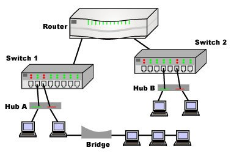
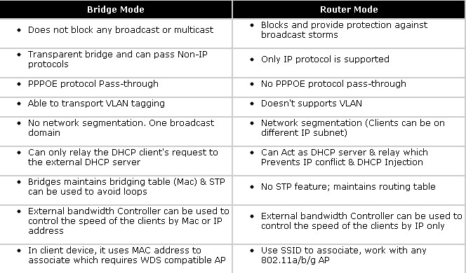
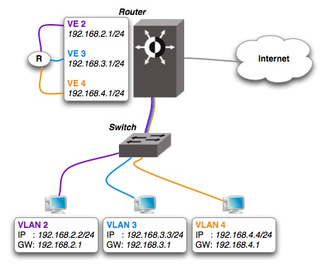

A Hub is the simplest of these devices. In general, a hub is the central part of a wheel where the spokes come together. Hubs cannot filter data so data packets are sent to all connected devices/computers and do not have intelligence to find out best path for data packets. This leads to inefficiencies and wastage. As a network product, a hub may include a group of modem cards for dial-in users, a gateway card for connections to a local area network (for example, an Ethernet or a token ring), and a connection to a line. Hubs are used on small networks where data transmission is not very high. 根据《计算机网络》一书的描述，由于hub会无过滤转发，所以有一个节点在发消息就会影响其他节点，于是一个hub就构成了一个冲突域。 
In telecommunication networks, a bridge is a product that connects a local area network (LAN) to another local area network that uses the same protocol. Having a single incoming and outgoing port and filters traffic on the LAN by looking at the MAC address, bridge is more complex than hub. Bridge looks at the destination of the packet before forwarding unlike a hub. It restricts transmission on other LAN segment if destination is not found. A bridge works at the data-link (physical network) level of a network, copying a data frame from one network to the next network along the communications path 
A switch when compared to bridge has multiple ports. Switches can perform error checking before forwarding data, which are very efficient by not forwarding packets that error-end out or forwarding good packets selectively to correct devices only. Switches can support both layer 2 (based on MAC Address) and layer 3 (Based on IP address) depending on the type of switch. Usually large networks use switches instead of hubs to connect computers within the same subnet. 根据《计算机网络》一书的描述，bridge经常用来连接很多个LAN，而switch经常用来和独立的计算机连接；就像上面说的那样，bridge经常只有两个port，incoming和outcoming，switch则有很多个port 
A router, like a switch forwards packets based on address. Usually, routers use the IP address to forward packets, which allows the network to go across different protocols. Routers forward packets based on software while a switch (Layer 3 for example) forwards using hardware called ASIC (Application Specific Integrated Circuits). Routers support different WAN technologies but switches do not. Besides, wireless routers have access point built in. The most common home use for routers is to share a broadband internet connection. As the router has a public IP address which is shared with the network, when data comes through the router, it is forwarded to the correct computer. the original material is referred from: switch vs router hub bridge repeater wireless access point More tips on switches or routers comparison at: Cisco Switch Comparison-catalyst 2960 VS 3560 VS 3750 VS 4500 VS 6500 Stacking Cisco 2960-S VS Cisco 3750 Switches Cisco 1941 VS 2901-Comparison Helps You Choose the Right Router
关于vlan In computer networking, a single layer-2 network may be partitioned to create multiple distinct broadcast domains. 这是比较本质的解释，作用就是为了分隔广播域，除此之外与switch、bridge的区别就是，支持vlan的设备可以通过在链路层的消息头中加入几个tag，实现基于packet的消息分发与隔离。